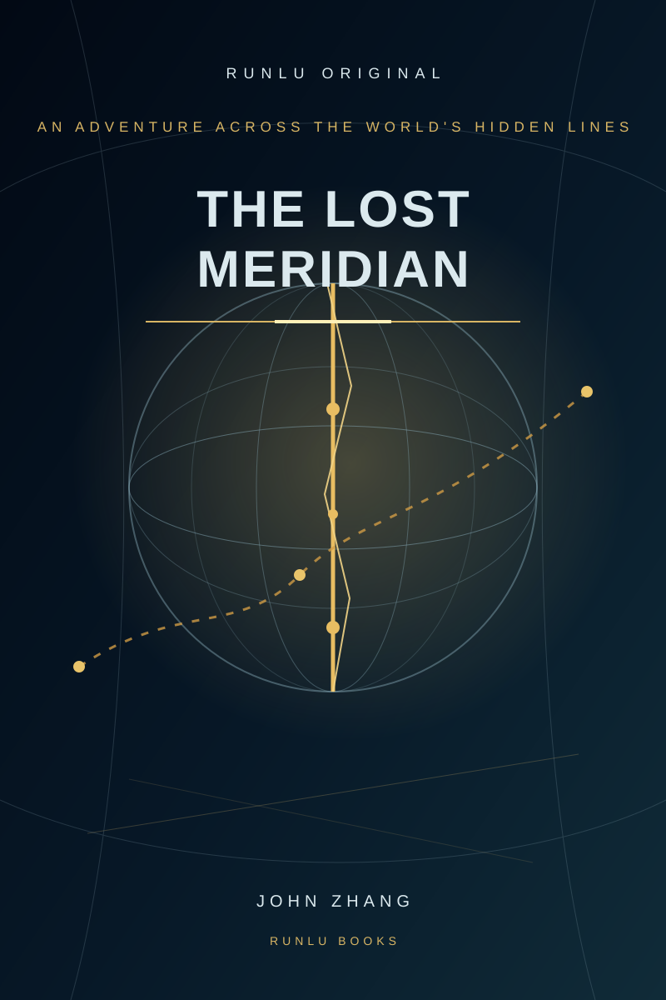

The lost meridian
The trail is a measurement chain revised and contested across generations.

RUNLU BOOKS · FLAGSHIP LONG-FORM ADVENTURE
If even coordinates can be revised, how do we know the world beneath our feet is still the same world?
An unclaimed survey crate pulls Yan Lin into a chain of lost baselines and dangerous corrections.
The trail begins in a Calgary warehouse scheduled for demolition.
The master manuscript is still advancing.
WHY IT STANDS AT THE FRONT OF THE SHELF
The Lost Meridian is one of RUNLU's largest and most representative original long-form projects.
The trail is a measurement chain revised and contested across generations.
Truth can be overwritten and made more convincing than the original.
Geography participates in the investigation.
Pursuit, traps, discoveries and reversals keep moving through the book.
FIELD DOSSIER
No spoilers beyond the public opening.
The first ten chapters move quickly from one unclaimed crate to a hidden geometry beneath the Canadian Rockies.
PUBLIC PREVIEW
Begin with The Unnamed Crate.